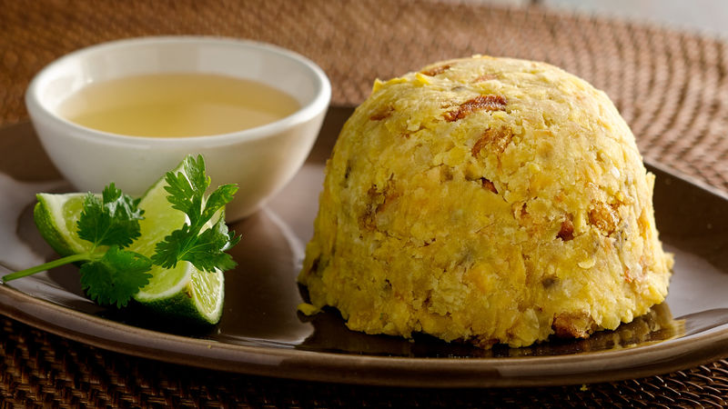

GASTRONOMIA
Mofongo
Uno de los platos más emblemáticos de Puerto Rico es el mofongo. Se prepara con plátanos verdes fritos que se machacan y se mezclan con ajo, aceite de oliva y chicharrones de cerdo crujientes. El resultado es una mezcla sabrosa y consistente que se puede disfrutar sola o como acompañamiento de otros platos.

Lechon
El lechón asado es una especialidad culinaria muy popular en Puerto Rico. Se trata de un cerdo entero que se asa lentamente durante horas hasta obtener una piel crujiente y una carne jugosa y tierna. El lechón asado se sirve en ocasiones especiales y festividades, y es un plato icónico de la cultura puertorriqueña.

Pasteles
Otro plato típico es el pasteles, que son masa de plátano o yuca rellena con un guiso de cerdo, pollo o mariscos. Los pasteles se envuelven en hojas de plátano y se cocinan al vapor o se hierven. Son una delicia navideña muy apreciada y requieren tiempo y habilidad para su elaboración.

Piña Colada
En cuanto a las bebidas, la piña colada es una opción refrescante y popular en Puerto Rico. Esta bebida tropical se prepara con ron, jugo de piña fresco y crema de coco, y se sirve en un vaso con hielo y una rodaja de piña como adorno. Otra bebida típica es el coquito, una especie de ponche de huevo puertorriqueño que se elabora con ron, leche de coco, leche condensada, yema de huevo, especias y vainilla. El coquito es una bebida dulce y cremosa que se consume durante las fiestas navideñas.